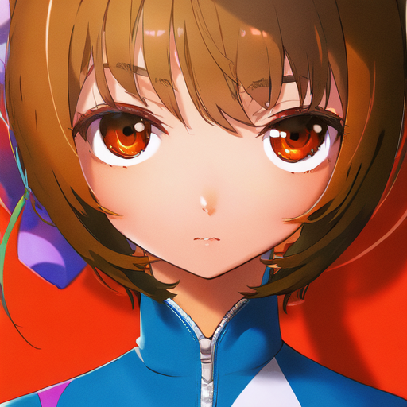
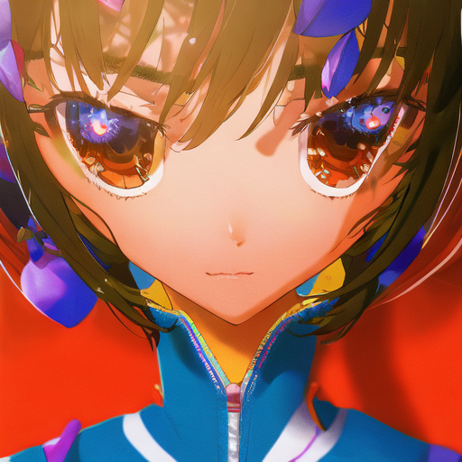
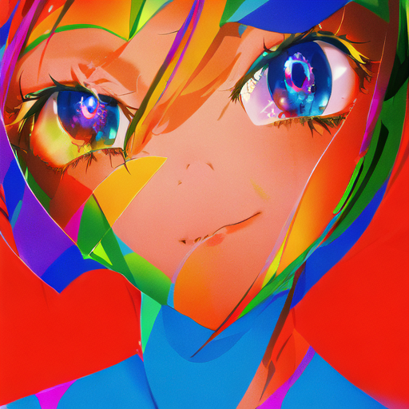
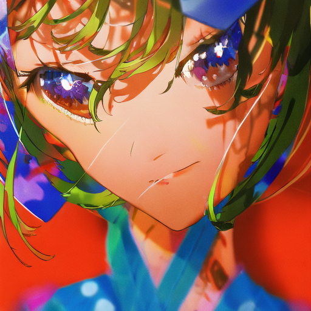
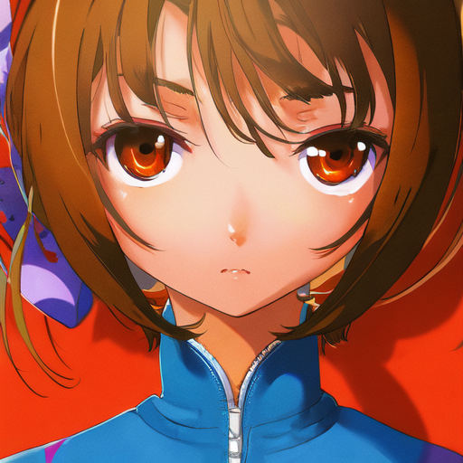
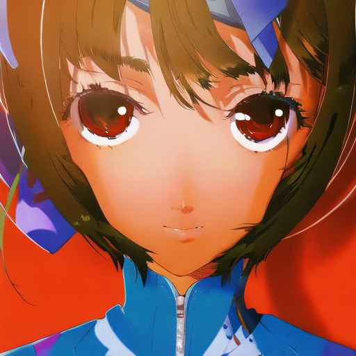
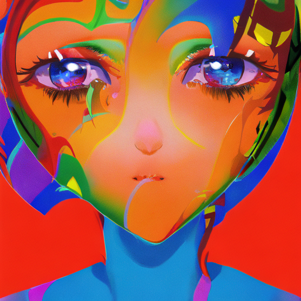
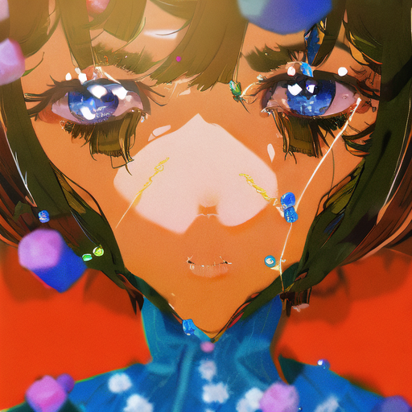
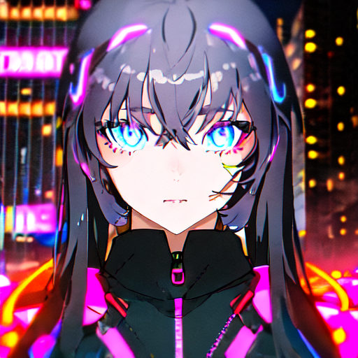
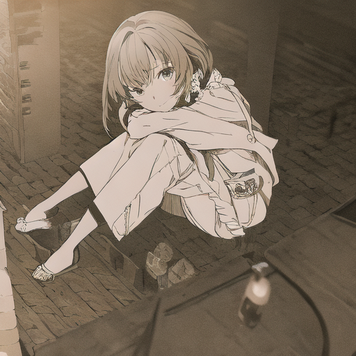

scale 1.5 甜点精扫 — "有点像了"之后，把甜点钉死
你说 scale 1.5 有点像了 → 这轮围绕 1.5 精探（1.2 / 1.5 / 1.8），并顺手修了一个大问题：发灰。
修复方法只改了 prompt 两处，零成本：负面词追加 monochrome, greyscale，彩色版正面词追加 vibrant colors, vivid。
重要发现：上一轮 scale 1.5 "色彩崩落"（饱和度 0.27、hue_sim 0.14~0.17）的主因是灰度化，不是色相跑偏。
这次加了灰度负面词后，同 scale 1.5 饱和度直接回到 0.69~0.79、hue_sim 回升到 0.34~0.50 —— 之前量化表格里的"越拧越歪"有一半是灰图假象。
v5b_e2（旧甜点）：1.2 → 1.5 → 1.5彩色 → 1.8

1.2
hue 0.363 · sat 0.679

1.5（你说的那张）
hue 0.407 · sat 0.692

1.5 + 彩色修正
hue 0.462 · sat 0.785

1.8
hue 0.424 · sat 0.681
v5c_e3（768 新训）：1.2 → 1.5 → 1.5彩色 → 1.8

1.2
hue 0.338 · sat 0.700

1.5
hue 0.339 · sat 0.695

1.5 + 彩色修正
hue 0.502 · sat 0.789
★ 双指标全场最高
1.8
hue 0.323 · sat 0.672
参考系：金标准（社区 Chanter LoRA，同引擎出图）
同款prompt · scale 1.0
hue 0.31~0.34

cyberpunk · scale 1.0
hue 0.587 · sat 0.47

旧1.5（未修灰度）
hue 0.166 · sat 0.272 发灰
量化总表
| 权重 | scale | 版本 | hue_sim | 饱和度 | 说明 |
|---|
| v5b_e2 | 1.2 | 素 | 0.363 | 0.679 | 已有风格迹象 |
| v5b_e2 | 1.5 | 素 | 0.407 | 0.692 | 你说"有点像"的档位 |
| v5b_e2 | 1.5 | 彩色修正 | 0.462 | 0.785 | 色彩修复+13% |
| v5b_e2 | 1.8 | 素 | 0.424 | 0.681 | 继续上探略有回落 |
| v5c_e3 | 1.2 | 素 | 0.338 | 0.700 | - |
| v5c_e3 | 1.5 | 素 | 0.339 | 0.695 | - |
| v5c_e3 | 1.5 | 彩色修正 | 0.502 | 0.789 | 全场最高 |
| v5c_e3 | 1.8 | 素 | 0.323 | 0.672 | 过头 |
你的判定清单（30 秒）
1. 两张"1.5 + 彩色修正"（第3列，金框那张重点看）——风格还在吗？颜色是不是顺眼多了？
2. v5b 和 v5c 的彩色版对比——768 那版（v5c）的双指标更高，但你的眼睛说了算：线稿/笔触哪版更米山舞？
3. 往上 1.8 有没有比 1.5 更像？像 → 甜点可能还要更高；崩了 → 1.5 锁定。
4. 别忘了顺手回答上一个问题：金标准那张（参考系第1张）你认不认得出是米山舞？
生成口径：seed=42 · 30 steps · cfg 7.5 · prompt「yoneya style, solo, looking at viewer[, vibrant colors, vivid], masterpiece, best quality」· 负面追加 monochrome, greyscale